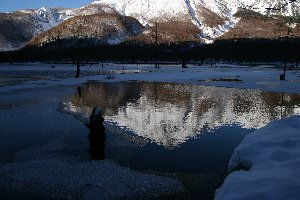
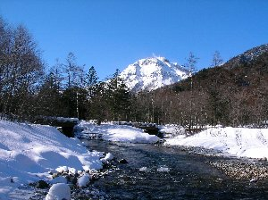

冬の上高地 | 2006年1月 |
|---|---|
| カメラマンの憧れの地「上高地」。 春から秋にかけては、大勢の観光客でひしめき合うこの地も、冬季閉鎖期間（道路が）にはめっきり少なくなる。 「雪に覆われた上高地」。 なんて幻想的で魅力的な言葉でしょう。是非とも冬の上高地に行ってみたい！ しかも、スノーシューで行ったらもっと楽しそう！ って事で、冬山登山のベテラン「まゆ」さんに、ご指導を仰ぎながら行って来ました！ 私がスノーシューを買ったのは昨年。 レンタルでやったことは有るけれど、もっと色々な場所に行きたくて買ってしまった訳です。 昨年は戸隠に行って楽しんで来て、今年は、もうちょっとレベルアップしたくて冬の上高地へ。 スノーシューの楽しいところは、他の人が行けない（行きづらい）雪が沢山有る所でもガンガン行けて、皆が見れない景色を堪能出来るってところでしょうか。 さて上高地ですが、本当は土日でキャンプをして、朝夕の景色、星空を堪能しようかと思っていたのですが、天気予報では土曜は雪！ キャンプは別としても写真が撮れない！ って事で、土曜の夜は上高地の入り口とも言える「沢渡」の駐車場でテント泊して、朝早く上高地入りすることになりました。 気温が−１０℃を軽く下回っている事は、容易に想像できる中でのテントは、なかなか楽しく、晩御飯も温かい「かす汁」（初めて食べたけど、これは美味しいです）を頂き、お酒も入っていい気分です♪ 寝る前の天気は、日中と同じように「どんより曇り」。 結局、今日は雪も降らずに曇りでした。 | |
 釜トンネル出口 |  大正池と穂高連峰 |
| 4:30 起床 当然、外は真っ暗です。 テントに付いた水滴（蒸気）が、ガチガチに凍っていましたが、シュラフの中は温かく、寒くて寝れない事は無かったです。 外に出ると満天の星空！ 今日は天気が良さそうだ！ 朝食はやはりテント内で「お雑煮」です。 テント内でお餅って、なんか新鮮〜 出かける準備をしていると、空がどんより曇ってきました。 タクシーで釜トンネルまで向かう途中、運転手さんに今日の天気を聞いてみると・・・「あー、上高地のほうは晴れてるよ。午前中は良いんじゃないかな。午後は降るよ」との事。 確かに、釜トンネル入り口では晴れてます！ （釜トンネル入り口までタクシーで2,350円） 7:10 釜トンネル入り口（ゲート） 冬の上高地は、釜トンネルから歩いて行かなければなりません。 長年の工事の末、釜トンネルは「新釜トンネル」になっていて、中は広く電気も付いていて、ヘッドライトも要らない位です。 凍ってもいないし、ツララも出来ていません。 快適なトンネルを抜けると、青い空と朝焼けに染まる焼岳が見えました！ あ〜、天気良いな〜 この時期でも、中には工事車両や関係者の車が入る為、大正池までは除雪がされていて、凍ってはいるものの普通に歩いて行けます。 | |
 朝の焼岳 |  大正池に映り込む焼岳 |
| 8:10 大正池到着 大正池は全面凍ってはいませんでしたが、そこから見る穂高連峰、焼岳は綺麗の一言です！ 空気が澄んでいるせいか、前に見た時より近くに見えます。 朝日に輝く穂高は、雪の反射でとても眩しく、まだ日が当たっていない大正池と対照的で、写真を撮るほうとしては非常に厄介でしたが、きれいな雪山が撮れました。 しばし写真を撮った後、田代池に向かい、そこからスノーシューを履いて道なき道を歩いて、梓川沿いを河童橋に向かいました。 梓川は夏同様に美しく、その河原は雪で覆われていて、絶好のスノーシュー場となっていて、バタバタと歩き回りました。 前日に雪が降っていれば、もっとパウダースノーだったのに、ここ数日降っていないらしく、表面がちょっと硬くて、中はやわらかい状態（まゆさん曰く「最中」だそうで）、誰も踏みしめていない雪原に足跡を残して来ました。 ちなみに、この日は団体さんが一組（15名位）と、カメラマン6名位、スノーシューを持ったハイカー3名、テント泊まりの5名を見かけました。そこそこ人は入っています。（これでも、少ない方なんだって） | |
 梓川のほとりで |  梓川と焼岳 |
| 11:00 河童橋到着 そして、ついに河童橋！ 夏は激混みで記念写真も順番待ちなのに、誰も居なくて写真取り放題！ 穂高連峰が雄大に見えました。 廻りのホテルや土産物屋さんも戸を閉め、とても静かです。 さあ、ここで昼食です。 お昼はパスタ入りクリームシチューとパン。 風が出始めて難儀しましたが、やはり温かい食べ物は美味しい〜 このクリームシチュー、私でも作れるかな？ 見てると簡単そう・・・・・・ 12時過ぎると予報どおりに、曇ってきました。 あれよあれよと、穂高は重たそうな雪雲に覆い隠され、さっきまでの快晴がウソの様です。 帰りもスノーシューの特色を生かし、道なき道を突き進みました。 夏だと怒られるよね。 もしかしたら冬でも怒られるのか？ でも、自然を傷付けていないから勘弁してください。 第一、遊歩道見えないし・・・・ と、誰かに言い訳するような文章も書いたところで、帰りはすばやく田代池→大正池と来て、大正池からスノーシューを外して帰ってきました。大正池を過ぎる頃には、雪が舞い始め、風が強まり、日差しは薄く、「今夜は降るな！」ってオーラが漂っていました。 | |
 穂高目の前 |  ちょい分かりにくい穂高連峰 |
| 15:10 釜トンネル出口（つまりゲート） 軽く地吹雪が吹く中（ホントに午前中の心地よさは何処へやら）釜トンネルは天国でした。トンネル出口のゲートに、朝乗ってきたタクシーが待っていてくれて（朝、帰りの時間を聞かれ「3時位」って言っておいたんだよね）待ち時間無く帰れました。 帰りは冷えた体を温泉で癒し、ゆったりしてきました。 《総括》 冬の上高地は、天気が良ければ最高です。 決して大変な所では無いけれど、とても寒いので、それなりの装備で行った方が良いでしょう。 さすがに秋のハイキング気分では、不味いと思います。 もしもの時の食料、温かい飲み物（重要です）、温かい服装（スキー行く様な格好。ゴーグル忘れずに）、雪の上を歩ける装備、手袋や毛帽子なんかも必要です。ずばりスキー場より寒い気はします。 凍傷に気をつけましょう！ そこまでしても、景色は素晴らしいので、是非行ってみてください。 スノーシュー最高！ 追記 翌日、職場の後輩に、上高地行ってきたよ〜って言ったら、何処それ？ 何しに行くの？ 楽しい？ って言われた・・・・ 楽しいに決まってるジャン！！ | |
 お昼のシチュー |  水に映り込んだ焼岳 |
| 写真＆コメント ｂｙ べっしー | |